In the preceding section we defined the area under a curve in terms of Riemann sums:
However, this definition came with restrictions. We required to be continuous and nonnegative. Unfortunately, real-world problems don’t always meet these restrictions. In this section, we look at how to apply the concept of the area under the curve to a broader set of functions through the use of the definite integral.
Definition and Notation
The definite integral generalizes the concept of the area under a curve. We lift the requirements that be continuous and nonnegative, and define the definite integral as follows.
Definition
If is a function defined on an interval the definite integral of f from a to b is given by
provided the limit exists. If this limit exists, the function is said to be integrable on or is an integrable function.
The integral symbol in the previous definition should look familiar. We have seen similar notation in the chapter on Applications of Derivatives, where we used the indefinite integral symbol (without the a and b above and below) to represent an antiderivative. Although the notation for indefinite integrals may look similar to the notation for a definite integral, they are not the same. A definite integral is a number. An indefinite integral is a family of functions. Later in this chapter we examine how these concepts are related. However, close attention should always be paid to notation so we know whether we’re working with a definite integral or an indefinite integral.
Integral notation goes back to the late seventeenth century and is one of the contributions of Gottfried Wilhelm Leibniz, who is often considered to be the codiscoverer of calculus, along with Isaac Newton. The integration symbol ∫ is an elongated S, suggesting sigma or summation. On a definite integral, above and below the summation symbol are the boundaries of the interval, The numbers a and b are x-values and are called the limits of integration; specifically, a is the lower limit and b is the upper limit. To clarify, we are using the word limit in two different ways in the context of the definite integral. First, we talk about the limit of a sum as Second, the boundaries of the region are called the limits of integration.
We call the function the integrand, and the dx indicates that is a function with respect to x, called the variable of integration. Note that, like the index in a sum, the variable of integration is a dummy variable, and has no impact on the computation of the integral. We could use any variable we like as the variable of integration:
Previously, we discussed the fact that if is continuous on then the limit exists and is unique. This leads to the following theorem, which we state without proof.
Continuous Functions Are Integrable
If is continuous on then f is integrable on
Functions that are not continuous on may still be integrable, depending on the nature of the discontinuities. For example, functions continuous on a closed interval, apart from a finite number of jump discontinuities, are integrable.
It is also worth noting here that we have retained the use of a regular partition in the Riemann sums. This restriction is not strictly necessary. Any partition can be used to form a Riemann sum. However, if a nonregular partition is used to define the definite integral, it is not sufficient to take the limit as the number of subintervals goes to infinity. Instead, we must take the limit as the width of the largest subinterval goes to zero. This introduces a little more complex notation in our limits and makes the calculations more difficult without really gaining much additional insight, so we stick with regular partitions for the Riemann sums.
Evaluating an Integral Using the Definition
Use the definition of the definite integral to evaluate Use a right-endpoint approximation to generate the Riemann sum.
We first want to set up a Riemann sum. Based on the limits of integration, we have and For let be a regular partition of Then
Since we are using a right-endpoint approximation to generate Riemann sums, for each i, we need to calculate the function value at the right endpoint of the interval The right endpoint of the interval is and since P is a regular partition,
Thus, the function value at the right endpoint of the interval is
Then the Riemann sum takes the form
Using the summation formula for we have
Now, to calculate the definite integral, we need to take the limit as We get
Use the definition of the definite integral to evaluate Use a right-endpoint approximation to generate the Riemann sum.
6
Hint
Use the solving strategy from .
Evaluating Definite Integrals
Evaluating definite integrals this way can be quite tedious because of the complexity of the calculations. Later in this chapter we develop techniques for evaluating definite integrals without taking limits of Riemann sums. However, for now, we can rely on the fact that definite integrals represent the area under the curve, and we can evaluate definite integrals by using geometric formulas to calculate that area. We do this to confirm that definite integrals do, indeed, represent areas, so we can then discuss what to do in the case of a curve of a function dropping below the x-axis.
Using Geometric Formulas to Calculate Definite Integrals
Use the formula for the area of a circle to evaluate
The function describes a semicircle with radius 3. To find
we want to find the area under the curve over the interval The formula for the area of a circle is The area of a semicircle is just one-half the area of a circle, or The shaded area in covers one-half of the semicircle, or Thus,
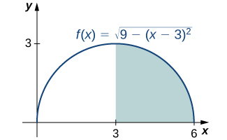
The value of the integral of the function over the interval is the area of the shaded region.
Use the formula for the area of a trapezoid to evaluate
18 square units
Hint
Graph the function and calculate the area under the function on the interval
Area and the Definite Integral
When we defined the definite integral, we lifted the requirement that be nonnegative. But how do we interpret “the area under the curve” when is negative?
Net Signed Area
Let us return to the Riemann sum. Consider, for example, the function (shown in ) on the interval Use and choose as the left endpoint of each interval. Construct a rectangle on each subinterval of height and width Δx. When is positive, the product represents the area of the rectangle, as before. When is negative, however, the product represents the negative of the area of the rectangle. The Riemann sum then becomes
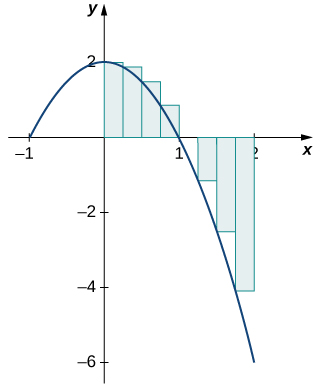
For a function that is partly negative, the Riemann sum is the area of the rectangles above the x-axis less the area of the rectangles below the x-axis.
Taking the limit as the Riemann sum approaches the area between the curve above the x-axis and the x-axis, less the area between the curve below the x-axis and the x-axis, as shown in . Then,
The quantity is called the net signed area.
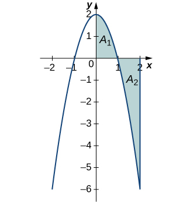
In the limit, the definite integral equals area A1 less area A2, or the net signed area.
Notice that net signed area can be positive, negative, or zero. If the area above the x-axis is larger, the net signed area is positive. If the area below the x-axis is larger, the net signed area is negative. If the areas above and below the x-axis are equal, the net signed area is zero.
Finding the Net Signed Area
Find the net signed area between the curve of the function and the x-axis over the interval
The function produces a straight line that forms two triangles: one from to and the other from to (). Using the geometric formula for the area of a triangle, the area of triangle A1, above the axis, is
where 3 is the base and is the height. The area of triangle A2, below the axis, is
where 3 is the base and 6 is the height. Thus, the net area is
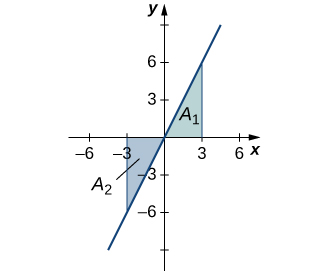
The area above the curve and below the x-axis equals the area below the curve and above the x-axis.
Analysis
If A1 is the area above the x-axis and A2 is the area below the x-axis, then the net area is Since the areas of the two triangles are equal, the net area is zero.
Find the net signed area of over the interval illustrated in the following image.
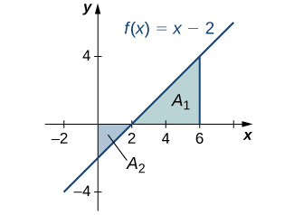
6
Hint
Use the solving method described in .
Total Area
One application of the definite integral is finding displacement when given a velocity function. If represents the velocity of an object as a function of time, then the area under the curve tells us how far the object is from its original position. This is a very important application of the definite integral, and we examine it in more detail later in the chapter. For now, we’re just going to look at some basics to get a feel for how this works by studying constant velocities.
When velocity is a constant, the area under the curve is just velocity times time. This idea is already very familiar. If a car travels away from its starting position in a straight line at a speed of 70 mph for 2 hours, then it is 140 mi away from its original position (). Using integral notation, we have
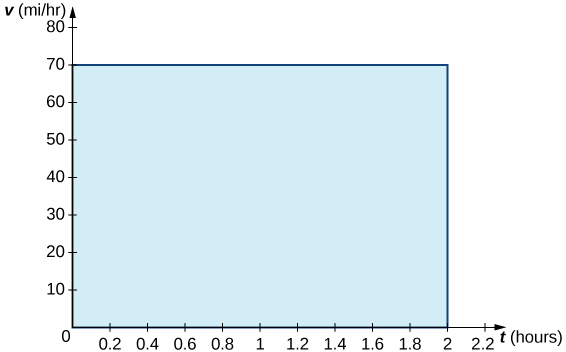
The area under the curve tells us how far the car is from its starting point at a given time.
In the context of displacement, net signed area allows us to take direction into account. If a car travels straight north at a speed of 60 mph for 2 hours, it is 120 mi north of its starting position. If the car then turns around and travels south at a speed of 40 mph for 3 hours, it will be back at it starting position (). Again, using integral notation, we have
In this case the displacement is zero.
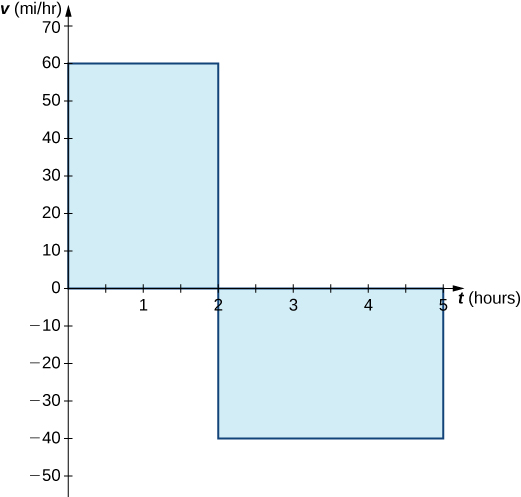
The area above the axis and the area below the axis are equal, so the net signed area is zero.
Suppose we want to know how far the car travels overall, regardless of direction. In this case, we want to know the area between the curve and the x-axis, regardless of whether that area is above or below the axis. This is called the total area.
Graphically, it is easiest to think of calculating total area by adding the areas above the axis and the areas below the axis (rather than subtracting the areas below the axis, as we did with net signed area). To accomplish this mathematically, we use the absolute value function. Thus, the total distance traveled by the car is
Bringing these ideas together formally, we state the following definitions.
Definition
Let be an integrable function defined on an interval Let A1 represent the area between and the x-axis that lies above the axis and let A2 represent the area between and the x-axis that lies below the axis. Then, the net signed area between and the x-axis is given by
The total area between and the x-axis is given by
Finding the Total Area
Find the total area between and the x-axis over the interval
Calculate the x-intercept as (set solve for x). To find the total area, take the area below the x-axis over the subinterval and add it to the area above the x-axis on the subinterval ().
The total area between the line and the x-axis over is A2 plus A1.
We have
Then, using the formula for the area of a triangle, we obtain
The total area, then, is
Find the total area between the function and the x-axis over the interval
18
Hint
Review the solving strategy in .
Properties of the Definite Integral
The properties of indefinite integrals apply to definite integrals as well. Definite integrals also have properties that relate to the limits of integration. These properties, along with the rules of integration that we examine later in this chapter, help us manipulate expressions to evaluate definite integrals.
Rule: Properties of the Definite Integral
If the limits of integration are the same, the integral is just a line and contains no area.
If the limits are reversed, then place a negative sign in front of the integral.
The integral of a sum is the sum of the integrals.
The integral of a difference is the difference of the integrals.
for constant c. The integral of the product of a constant and a function is equal to the constant multiplied by the integral of the function.
Although this formula normally applies when c is between a and b, the formula holds for all values of a, b, and c, provided is integrable on the largest interval.
Using the Properties of the Definite Integral
Use the properties of the definite integral to express the definite integral of over the interval as the sum of three definite integrals.
Using integral notation, we have We apply properties 3. and 5. to get
Use the properties of the definite integral to express the definite integral of over the interval as the sum of four definite integrals.
Hint
Use the solving strategy from and the properties of definite integrals.
Using the Properties of the Definite Integral
If it is known that and find the value of
By property 6.,
Thus,
If it is known that and find the value of
−7
Hint
Use the solving strategy from and the rule on properties of definite integrals.
Comparison Properties of Integrals
A picture can sometimes tell us more about a function than the results of computations. Comparing functions by their graphs as well as by their algebraic expressions can often give new insight into the process of integration. Intuitively, we might say that if a function is above another function then the area between and the x-axis is greater than the area between and the x-axis. This is true depending on the interval over which the comparison is made. The properties of definite integrals are valid whether or The following properties, however, concern only the case and are used when we want to compare the sizes of integrals.
Comparison Theorem
If for then
If for then
If m and M are constants such that for then
Comparing Two Functions over a Given Interval
Compare and over the interval
Graphing these functions is necessary to understand how they compare over the interval Initially, when graphed on a graphing calculator, appears to be above everywhere. However, on the interval the graphs appear to be on top of each other. We need to zoom in to see that, on the interval is above The two functions intersect at and ().
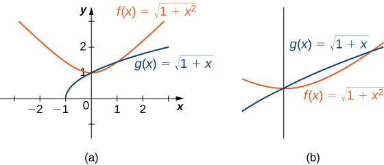
(a) The function appears above the function except over the interval (b) Viewing the same graph with a greater zoom shows this more clearly.
We can see from the graph that over the interval Comparing the integrals over the specified interval we also see that (). The thin, red-shaded area shows just how much difference there is between these two integrals over the interval
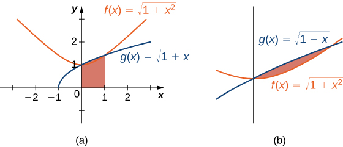
(a) The graph shows that over the interval where equality holds only at the endpoints of the interval. (b) Viewing the same graph with a greater zoom shows this more clearly.
Average Value of a Function
We often need to find the average of a set of numbers, such as an average test grade. Suppose you received the following test scores in your algebra class: 89, 90, 56, 78, 100, and 69. Your semester grade is your average of test scores and you want to know what grade to expect. We can find the average by adding all the scores and dividing by the number of scores. In this case, there are six test scores. Thus,
Therefore, your average test grade is approximately 80.33, which translates to a B− at most schools.
Suppose, however, that we have a function that gives us the speed of an object at any time t, and we want to find the object’s average speed. The function takes on an infinite number of values, so we can’t use the process just described. Fortunately, we can use a definite integral to find the average value of a function such as this.
Let be continuous over the interval and let be divided into n subintervals of width Choose a representative in each subinterval and calculate for In other words, consider each as a sampling of the function over each subinterval. The average value of the function may then be approximated as
which is basically the same expression used to calculate the average of discrete values.
But we know so and we get
Following through with the algebra, the numerator is a sum that is represented as and we are dividing by a fraction. To divide by a fraction, invert the denominator and multiply. Thus, an approximate value for the average value of the function is given by
This is a Riemann sum. Then, to get the exact average value, take the limit as n goes to infinity. Thus, the average value of a function is given by
Definition
Let be continuous over the interval Then, the average value of the function (or fave) on is given by
Finding the Average Value of a Linear Function
Find the average value of over the interval
First, graph the function on the stated interval, as shown in .
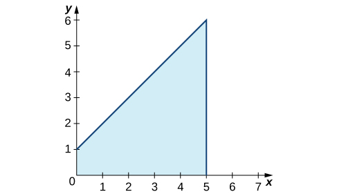
The graph shows the area under the function over
The region is a trapezoid lying on its side, so we can use the area formula for a trapezoid where h represents height, and a and b represent the two parallel sides. Then,
Thus the average value of the function is
Find the average value of over the interval
3
Hint
Use the average value formula, and use geometry to evaluate the integral.
Key Concepts
The definite integral can be used to calculate net signed area, which is the area above the x-axis less the area below the x-axis. Net signed area can be positive, negative, or zero.
The component parts of the definite integral are the integrand, the variable of integration, and the limits of integration.
Continuous functions on a closed interval are integrable. Functions that are not continuous may still be integrable, depending on the nature of the discontinuities.
The properties of definite integrals can be used to evaluate integrals.
The area under the curve of many functions can be calculated using geometric formulas.
The average value of a function can be calculated using definite integrals.
Key Equations
Definite Integral
Properties of the Definite Integral
for constant c
In the following exercises, express the limits as integrals.
over
over
over
over
In the following exercises, given Ln or Rn as indicated, express their limits as as definite integrals, identifying the correct intervals.
In the following exercises, evaluate the integrals of the functions graphed using the formulas for areas of triangles and circles, and subtracting the areas below the x-axis.
In the following exercises, evaluate the integral using area formulas.
The integral is the area of the triangle,
The integral is the area of the triangle, 9.
The integral is the area
The integral is the area of the “big” triangle less the “missing” triangle,
In the following exercises, use averages of values at the left (L) and right (R) endpoints to compute the integrals of the piecewise linear functions with graphs that pass through the given list of points over the indicated intervals.
over
over
over
over
Suppose that and and and In the following exercises, compute the integrals.
In the following exercises, use the identity to compute the integrals.
The integrand is odd; the integral is zero.
In the following exercises, find the net signed area between and the x-axis.
(Hint: Look at the graph of f.)
(Hint: Look at the graph of f.)
The integrand is antisymmetric with respect to The integral is zero.
In the following exercises, given that and compute the integrals.
In the following exercises, use the comparison theorem.
Show that
Show that
The integrand is negative over
Show that
Show that
over so over
Show that over
Show that
Multiply by the length of the interval to get the inequality.
In the following exercises, find the average value fave of f between a and b, and find a point c, where
when
In the following exercises, approximate the average value using Riemann sums L100 and R100. How does your answer compare with the exact given answer?
[T] over the interval the exact solution is
[T] over the interval the exact solution is
the exact average is between these values.
[T] over the interval the exact solution is
[T] over the interval the exact solution is
In the following exercises, compute the average value using the left Riemann sums LN for How does the accuracy compare with the given exact value?
[T] over the interval the exact solution is
[T] over the interval the exact solution is
The exact answer so L100 is not accurate.
[T] over the interval the exact solution is
[T] over the interval the exact solution is
The exact answer so L100 is not accurate to first decimal.
Suppose that and Show that and
Suppose that and Show that
Use Then,
Show that the average value of over is equal to 1/2 Without further calculation, determine whether the average value of over is also equal to 1/2.
Show that the average value of over is equal to Without further calculation, determine whether the average value of over is also equal to
so divide by the length 2π of the interval. has period π, so yes, it is true.
Explain why the graphs of a quadratic function (parabola) and a linear function can intersect in at most two points. Suppose that and and that Explain why whenever
Suppose that parabola opens downward and has a vertex of For which interval is as large as possible?
The integral is maximized when one uses the largest interval on which p is nonnegative. Thus, and
Suppose can be subdivided into subintervals such that either over or over Set
Explain why
Then, explain why
Suppose f and g are continuous functions such that for every subinterval of Explain why for all values of x.
If for some then since is continuous, there is an interval containing t0 such that over the interval and then over this interval.
Suppose the average value of f over is 1 and the average value of f over is 1 where Show that the average value of f over is also 1.
Suppose that can be partitioned. taking such that the average value of f over each subinterval is equal to 1 for each Explain why the average value of f over is also equal to 1.
The integral of f over an interval is the same as the integral of the average of f over that interval. Thus, Dividing through by gives the desired identity.
Suppose that for each i such that one has Show that
Suppose that for each i such that one has Show that
[T] Compute the left and right Riemann sums L10 and R10 and their average for over Given that to how many decimal places is accurate?
[T] Compute the left and right Riemann sums, L10 and R10, and their average for over Given that to how many decimal places is accurate?
so the estimate is accurate to two decimal places.
If what is
Estimate using the left and right endpoint sums, each with a single rectangle. How does the average of these left and right endpoint sums compare with the actual value
The average is which is equal to the integral in this case.
Estimate by comparison with the area of a single rectangle with height equal to the value of t at the midpoint How does this midpoint estimate compare with the actual value
From the graph of shown:
Explain why
Explain why, in general, for any value of a.
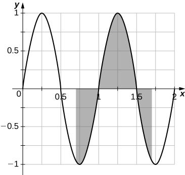
a. The graph is antisymmetric with respect to over so the average value is zero. b. For any value of a, the graph between is a shift of the graph over so the net areas above and below the axis do not change and the average remains zero.
If f is 1-periodic odd, and integrable over is it always true that
If f is 1-periodic and is it necessarily true that for all A?
Yes, the integral over any interval of length 1 is the same.
Key terms
average value of a function (or fave) the average value of a function on an interval can be found by calculating the definite integral of the function and dividing that value by the length of the interval
definite integral a primary operation of calculus; the area between the curve and the x-axis over a given interval is a definite integral
integrable function a function is integrable if the limit defining the integral exists; in other words, if the limit of the Riemann sums as n goes to infinity exists
integrand the function to the right of the integration symbol; the integrand includes the function being integrated
limits of integration these values appear near the top and bottom of the integral sign and define the interval over which the function should be integrated
net signed area the area between a function and the x-axis such that the area below the x-axis is subtracted from the area above the x-axis; the result is the same as the definite integral of the function
total area total area between a function and the x-axis is calculated by adding the area above the x-axis and the area below the x-axis; the result is the same as the definite integral of the absolute value of the function
variable of integration indicates which variable you are integrating with respect to; if it is x, then the function in the integrand is followed by dx
![A graph containing the upper half of three circles on the x axis. The first has center at (1,0) and radius one. It corresponds to the function sqrt(2x – x^2) over [0,2]. The second has center at (4,0) and radius two. It corresponds to the function sqrt(-12 + 8x – x^2) over [2,6]. The last has center at (9,0) and radius three. It corresponds to the function sqrt(-72 + 18x – x^2) over [6,12]. All three semi circles are shaded – the area under the curve and above the x axis.](https://raw.githubusercontent.com/openstax/osbooks-calculus-bundle/main/media/CNX_Calc_Figure_05_02_201.jpg)
![A graph of three isosceles triangles corresponding to the functions 1 - |x-1| over [0,2], 2 - |x-4| over [2,4], and 3 - |x-9| over [6,12]. The first triangle has endpoints at (0,0), (2,0), and (1,1). The second triangle has endpoints at (2,0), (6,0), and (4,2). The last has endpoints at (6,0), (12,0), and (9,3). All three are shaded.](https://raw.githubusercontent.com/openstax/osbooks-calculus-bundle/main/media/CNX_Calc_Figure_05_02_202.jpg)
![A graph with three parts. The first is the upper half of a circle with center at (1, 0) and radius 1, which corresponds to the function sqrt(2x – x^2) over [0,2]. The second is a triangle with endpoints at (2, 0), (6, 0), and (4, -2), which corresponds to the function |x-4| - 2 over [2, 6]. The last is the upper half of a circle with center at (9, 0) and radius 3, which corresponds to the function sqrt(-72 + 18x – x^2) over [6,12]. All three are shaded.](https://raw.githubusercontent.com/openstax/osbooks-calculus-bundle/main/media/CNX_Calc_Figure_05_02_203.jpg)
![A graph of three shaded triangles. The first has endpoints at (0, 0), (2, 0), and (1, 1) and corresponds to the function 1 - |x-1| over [0, 2]. The second has endpoints at (2, 0), (6, 0), and (4, -2) and corresponds to the function |x-4| - 2 over [2, 6]. The third has endpoints at (6, 0), (12, 0), and (9, 3) and corresponds to the function 3 - |x-9| over [6, 12].](https://raw.githubusercontent.com/openstax/osbooks-calculus-bundle/main/media/CNX_Calc_Figure_05_02_204.jpg)
![A graph with three shaded parts. The first is the upper half of a circle with center at (1, 0) and radius one. It corresponds to the function sqrt(2x – x^2) over [0, 2]. The second is the lower half of a circle with center at (4, 0) and radius two, which corresponds to the function -sqrt(-12 + 8x – x^2) over [2, 6]. The last is the upper half of a circle with center at (9, 0) and radius three. It corresponds to the function sqrt(-72 + 18x – x^2) over [6, 12].](https://raw.githubusercontent.com/openstax/osbooks-calculus-bundle/main/media/CNX_Calc_Figure_05_02_205.jpg)
![A graph with three shaded parts. The first is a triangle with endpoints at (0, 0), (2, 0), and (1, 1), which corresponds to the function 1 - |x-1| over [0, 2] in quadrant 1. The second is the lower half of a circle with center at (4, 0) and radius two, which corresponds to the function –sqrt(-12 + 8x – x^2) over [2, 6]. The last is a triangle with endpoints at (6, 0), (12, 0), and (9, 3), which corresponds to the function 3 - |x-9| over [6, 12].](https://raw.githubusercontent.com/openstax/osbooks-calculus-bundle/main/media/CNX_Calc_Figure_05_02_206.jpg)